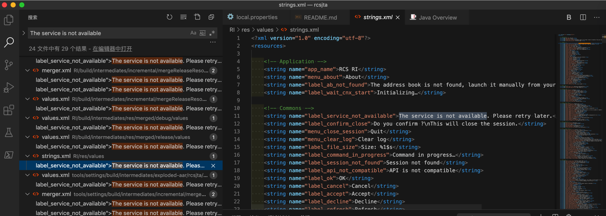
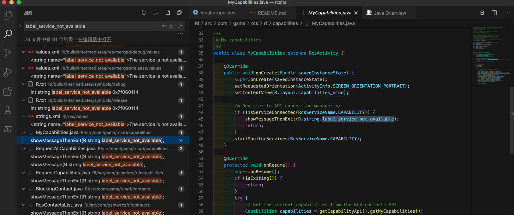
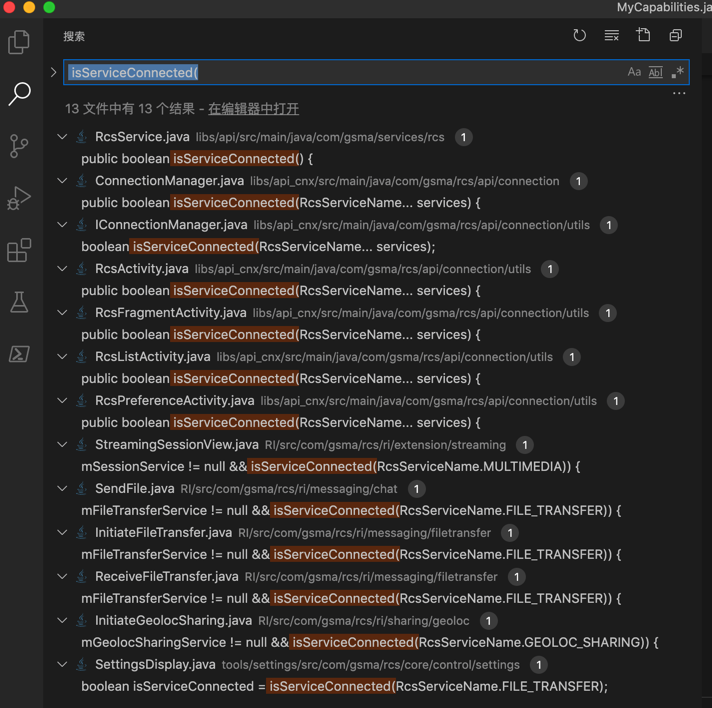
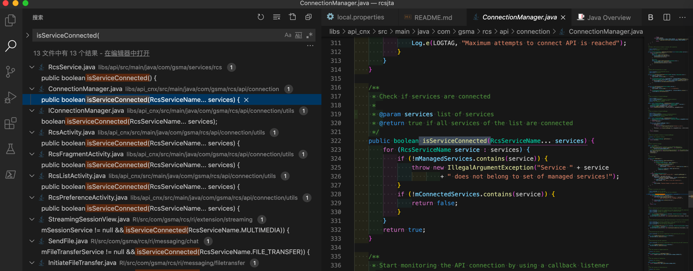
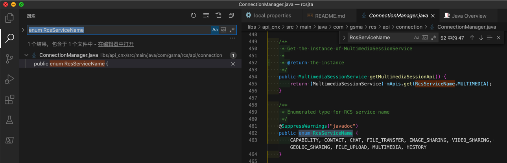

rcsjta源码分析
折腾rcsjta开发期间，尤其是尝试分析RCS服务为何没有启动The service is not available期间，研究了相关代码的逻辑，整理如下供参考。
The service is not available 相关代码逻辑
搜：
The service is not available
找到很多个。
其中RI中的是：
rcsjta/RI/res/values/strings.xml
<string name="label_service_not_available">The service is not available. Please retry later.</string>

去找找代码中哪里用到了：label_service_not_available
看到了 Capability的对应代码
rcsjta/RI/src/com/gsma/rcs/ri/capabilities/MyCapabilities.java
public class MyCapabilities extends RcsActivity {
@Override
public void onCreate(Bundle savedInstanceState) {
super.onCreate(savedInstanceState);
setRequestedOrientation(ActivityInfo.SCREEN_ORIENTATION_PORTRAIT);
setContentView(R.layout.capabilities_mine);
/* Register to API connection manager */
if (!isServiceConnected(RcsServiceName.CAPABILITY)) {
showMessageThenExit(R.string.label_service_not_available);
return;
}
startMonitorServices(RcsServiceName.CAPABILITY);
}

继续去研究代码
搜
isServiceConnected(
找到多处定义

找到了
rcsjta/libs/api_cnx/src/main/java/com/gsma/rcs/api/connection/ConnectionManager.java
/**
* Check if services are connected
*
* @param services list of services
* @return true if all services of the list are connected
*/
public boolean isServiceConnected(RcsServiceName... services) {
for (RcsServiceName service : services) {
if (!mManagedServices.contains(service)) {
throw new IllegalArgumentException("Service " + service
+ " does not belong to set of managed services!");
}
if (!mConnectedServices.contains(service)) {
return false;
}
}
return true;
}

其他地方都是调用这个ConnectionManager.java中的isServiceConnected
且其中的：mManagedServices 是开始初始化包含的一个列表：
/**
* The set of managed services
*/
private final Set<RcsServiceName> mManagedServices;
/**
* Constructor
*
* @param context The context
* @param managedServices Set of managed services
* @param rcsServiceControl instance of RcsServiceControl
*/
private ConnectionManager(Context context, Set<RcsServiceName> managedServices,
RcsServiceControl rcsServiceControl) {
mCtx = context;
mCnxIntent = PendingIntent.getBroadcast(context, 0, new Intent(ACTION_CONNECT), 0);
mAlarmManager = (AlarmManager) mCtx.getSystemService(Context.ALARM_SERVICE);
mManagedServices = managedServices;
mRcsServiceControl = rcsServiceControl;
/* Construct list of connected services */
mConnectedServices = new HashSet<>();
/* Construct list of clients to notify */
mClientsToNotify = new HashMap<>();
/* Construct list of APIs */
mApis = new HashMap<>();
if (managedServices == null || managedServices.isEmpty()) {
throw new RuntimeException("Incorrect parameter managedService!");
}
/* Instantiate APIs */
for (RcsServiceName service : mManagedServices) {
switch (service) {
case CAPABILITY:
mApis.put(RcsServiceName.CAPABILITY, new CapabilityService(context,
newRcsServiceListener(RcsServiceName.CAPABILITY)));
break;
case CHAT:
mApis.put(RcsServiceName.CHAT, new ChatService(context,
newRcsServiceListener(RcsServiceName.CHAT)));
break;
case CONTACT:
mApis.put(RcsServiceName.CONTACT, new ContactService(context,
newRcsServiceListener(RcsServiceName.CONTACT)));
break;
case FILE_TRANSFER:
mApis.put(RcsServiceName.FILE_TRANSFER, new FileTransferService(context,
newRcsServiceListener(RcsServiceName.FILE_TRANSFER)));
break;
case FILE_UPLOAD:
mApis.put(RcsServiceName.FILE_UPLOAD, new FileUploadService(context,
newRcsServiceListener(RcsServiceName.FILE_UPLOAD)));
break;
case GEOLOC_SHARING:
mApis.put(RcsServiceName.GEOLOC_SHARING, new GeolocSharingService(context,
newRcsServiceListener(RcsServiceName.GEOLOC_SHARING)));
break;
case HISTORY:
mApis.put(RcsServiceName.HISTORY, new HistoryService(context,
newRcsServiceListener(RcsServiceName.HISTORY)));
break;
case IMAGE_SHARING:
mApis.put(RcsServiceName.IMAGE_SHARING, new ImageSharingService(context,
newRcsServiceListener(RcsServiceName.IMAGE_SHARING)));
break;
case MULTIMEDIA:
mApis.put(RcsServiceName.MULTIMEDIA, new MultimediaSessionService(context,
newRcsServiceListener(RcsServiceName.MULTIMEDIA)));
break;
case VIDEO_SHARING:
mApis.put(RcsServiceName.VIDEO_SHARING, new VideoSharingService(context,
newRcsServiceListener(RcsServiceName.VIDEO_SHARING)));
break;
}
}
}
其中容易看出是各个功能和服务项目：
- CAPABILITY
- CHAT
- CONTACT
- FILE_TRANSFER
- FILE_UPLOAD
- GEOLOC_SHARING
- HISTORY
- IMAGE_SHARING
- MULTIMEDIA
- VIDEO_SHARING
再去看看mConnectedServices
/**
* Set of connected services
*/
private final Set<RcsServiceName> mConnectedServices;
mConnectedServices = new HashSet<>();
/**
* Create a RCS service listener to monitor API connection
*
* @param service the service to monitor
* @return the listener
*/
private RcsServiceListener newRcsServiceListener(final RcsServiceName service) {
return new RcsServiceListener() {
@Override
public void onServiceConnected() {
mConnectedServices.add(service);
notifyConnection(service);
}
@Override
public void onServiceDisconnected(ReasonCode error) {
mConnectedServices.remove(service);
notifyDisconnection(service, error);
}
};
}
public void notifyConnection() {
if (mListener == null) {
return;
}
if (mConnectedServices.containsAll(mMonitoredServices)) {
/* All monitored services are connected -> notify connection */
mListener.onServiceConnected();
mRetryCount = 0;
}
}
其中的：newRcsServiceListener，就是前面调用的。
不过注意到开始的ConnectionManager()初始化期间，是根据传入的mManagedServices去初始化对应服务的。所以要再去找找有哪些地方用到了：
ConnectionManager(
发现只有自己
libs/api_cnx/src/main/java/com/gsma/rcs/api/connection/ConnectionManager.java
/**
* Get an instance of ConnectionManager.
*
* @param ctx the context
* @param rcsServiceControl instance of RcsServiceControl
* @param managedServices Set of managed services
* @return the singleton instance.
*/
public static ConnectionManager createInstance(Context ctx,
RcsServiceControl rcsServiceControl, Set<RcsServiceName> managedServices) {
if (sInstance != null) {
return sInstance;
}
synchronized (ConnectionManager.class) {
if (sInstance == null) {
if (ctx == null) {
throw new IllegalArgumentException("Context is null");
}
sInstance = new ConnectionManager(ctx, managedServices, rcsServiceControl);
}
}
return sInstance;
}
继续研究原因。
继续找：
createInstance(
找到：
libs/api_cnx/src/main/java/com/gsma/rcs/api/connection/ConnectionManager.java
/**
* Get an instance of ConnectionManager.
*
* @param context the context
* @param rcsServiceControl instance of RcsServiceControl
* @param services list of managed services
* @return the singleton instance.
*/
public static ConnectionManager createInstance(Context context,
RcsServiceControl rcsServiceControl, RcsServiceName... services) {
Set<RcsServiceName> managedServices = new HashSet<>();
Collections.addAll(managedServices, services);
return createInstance(context, rcsServiceControl, managedServices);
}
以及真正的调用去初始化：
RI/src/com/gsma/rcs/ri/RiApplication.java
@Override
public void onCreate() {
super.onCreate();
...
mRcsServiceControl = RcsServiceControl.getInstance(mContext);
/* Starts the RCS service notification manager */
startService(new Intent(this, RcsServiceNotifManager.class));
/* Do not execute the ConnectionManager on the main thread */
Handler mainThreadHandler = new Handler(Looper.getMainLooper());
final ConnectionManager cnxManager = ConnectionManager.createInstance(mContext,
mRcsServiceControl, EnumSet.allOf(RcsServiceName.class));
mainThreadHandler.postDelayed(new Runnable() {
@Override
public void run() {
try {
cnxManager.start();
sCnxManagerStarted = true;
} catch (RuntimeException e) {
Log.e(LOGTAG, "Failed to start connection manager!", e);
}
}
}, DELAY_FOR_STARTING_CNX_MANAGER);
}
和：
tools/settings/src/com/gsma/rcs/core/control/CoreControlApplication.java
public class CoreControlApplication extends Application {
@Override
public void onCreate() {
super.onCreate();
Context context = getApplicationContext();
mRcsServiceControl = RcsServiceControl.getInstance(context);
final ConnectionManager cnxManager = ConnectionManager.createInstance(context,
mRcsServiceControl, RcsServiceName.FILE_TRANSFER, RcsServiceName.CHAT,
RcsServiceName.CONTACT);
/* Do not execute the ConnectionManager on the main thread */
Handler mainThreadHandler = new Handler(Looper.getMainLooper());
mainThreadHandler.postDelayed(new Runnable() {
@Override
public void run() {
cnxManager.start();
sCnxManagerStarted = true;
}
}, DELAY_FOR_STARTING_CNX_MANAGER);
}
此处很明显Core的control的application中，最开始启动时，只初始化了：
- FILE_TRANSFER
- CHAT
- CONTACT
并没有初始化其他的服务，比如Capability之类的，不知道为何？
去搜索其他的RcsServiceName.CAPABILITY，能找到其他的，但是没有找到启用的相关逻辑
所以难怪app中没看到服务启动
那如何启动其他如Capability的服务?
直接修改代码去加上？
感觉好像不太对啊，应该是哪里有配置，最开始启动哪些服务才对
去Core的app中看看
不过才注意到：
RI/src/com/gsma/rcs/ri/RiApplication.java
中的：
final ConnectionManager cnxManager = ConnectionManager.createInstance(mContext,
mRcsServiceControl, EnumSet.allOf(RcsServiceName.class));
就是启动了RcsServiceName的所有的类名
就是启动了所有的服务才对
即RI的参考实现中，最开始是去启动了所有的服务的
对于RcsServiceName的定义，找了半天终于通过搜：
package com.gsma.rcs.api
间接的，最后找到了位置，是在api_cnx中的：
libs/api_cnx/src/main/java/com/gsma/rcs/api/connection/ConnectionManager.java
而以为能找到原始定义：
/* Instantiate APIs */
for (RcsServiceName service : mManagedServices) {
switch (service) {
case CAPABILITY:
mApis.put(RcsServiceName.CAPABILITY, new CapabilityService(context,
newRcsServiceListener(RcsServiceName.CAPABILITY)));
break;
case CHAT:
mApis.put(RcsServiceName.CHAT, new ChatService(context,
newRcsServiceListener(RcsServiceName.CHAT)));
break;
case CONTACT:
mApis.put(RcsServiceName.CONTACT, new ContactService(context,
newRcsServiceListener(RcsServiceName.CONTACT)));
break;
case FILE_TRANSFER:
mApis.put(RcsServiceName.FILE_TRANSFER, new FileTransferService(context,
newRcsServiceListener(RcsServiceName.FILE_TRANSFER)));
break;
case FILE_UPLOAD:
mApis.put(RcsServiceName.FILE_UPLOAD, new FileUploadService(context,
newRcsServiceListener(RcsServiceName.FILE_UPLOAD)));
break;
case GEOLOC_SHARING:
mApis.put(RcsServiceName.GEOLOC_SHARING, new GeolocSharingService(context,
newRcsServiceListener(RcsServiceName.GEOLOC_SHARING)));
break;
case HISTORY:
mApis.put(RcsServiceName.HISTORY, new HistoryService(context,
newRcsServiceListener(RcsServiceName.HISTORY)));
break;
case IMAGE_SHARING:
mApis.put(RcsServiceName.IMAGE_SHARING, new ImageSharingService(context,
newRcsServiceListener(RcsServiceName.IMAGE_SHARING)));
break;
case MULTIMEDIA:
mApis.put(RcsServiceName.MULTIMEDIA, new MultimediaSessionService(context,
newRcsServiceListener(RcsServiceName.MULTIMEDIA)));
break;
case VIDEO_SHARING:
mApis.put(RcsServiceName.VIDEO_SHARING, new VideoSharingService(context,
newRcsServiceListener(RcsServiceName.VIDEO_SHARING)));
break;
}
还是没有直接定义。
然后去找最原始的定义。通过VIDEO_SHARING找到：
core/src/com/gsma/rcs/provider/sharing/VideoSharingProvider.java
private static final class UriType {
private static final class VideoSharing {
private static final int VIDEO_SHARING = 1;
private static final int VIDEO_SHARING_WITH_ID = 2;
}
private static final class InternalVideoSharing {
private static final int VIDEO_SHARING = 3;
private static final int VIDEO_SHARING_WITH_ID = 4;
}
}
看来是不同的类和实现中有最原始的定义，且是int值
不过后来终于找到了定义：
libs/api_cnx/src/main/java/com/gsma/rcs/api/connection/ConnectionManager.java
/**
* Enumerated type for RCS service name
*/
@SuppressWarnings("javadoc")
public enum RcsServiceName {
CAPABILITY, CONTACT, CHAT, FILE_TRANSFER, IMAGE_SHARING, VIDEO_SHARING, GEOLOC_SHARING, FILE_UPLOAD, MULTIMEDIA, HISTORY
}
即：该文件中是有定义的。
不是在每个具体实现中定义的。前面理解有误。
反推再去搜：
enum RcsServiceName
只能找到此处这一处：

也是对的。
至此基本上确定，代码逻辑上来说，应该就是：
RI/src/com/gsma/rcs/ri/RiApplication.java
/* Do not execute the ConnectionManager on the main thread */
Handler mainThreadHandler = new Handler(Looper.getMainLooper());
final ConnectionManager cnxManager = ConnectionManager.createInstance(mContext,
mRcsServiceControl, EnumSet.allOf(RcsServiceName.class));
mainThreadHandler.postDelayed(new Runnable() {
@Override
public void run() {
try {
cnxManager.start();
sCnxManagerStarted = true;
} catch (RuntimeException e) {
Log.e(LOGTAG, "Failed to start connection manager!", e);
}
}
}, DELAY_FOR_STARTING_CNX_MANAGER);
}
这句：
final ConnectionManager cnxManager = ConnectionManager.createInstance(mContext,
mRcsServiceControl, EnumSet.allOf(RcsServiceName.class));
去启动了RCS所有的服务。
至于后续为何服务还是没启动，则需要后续深入调研其他方面，才可能找到原因。